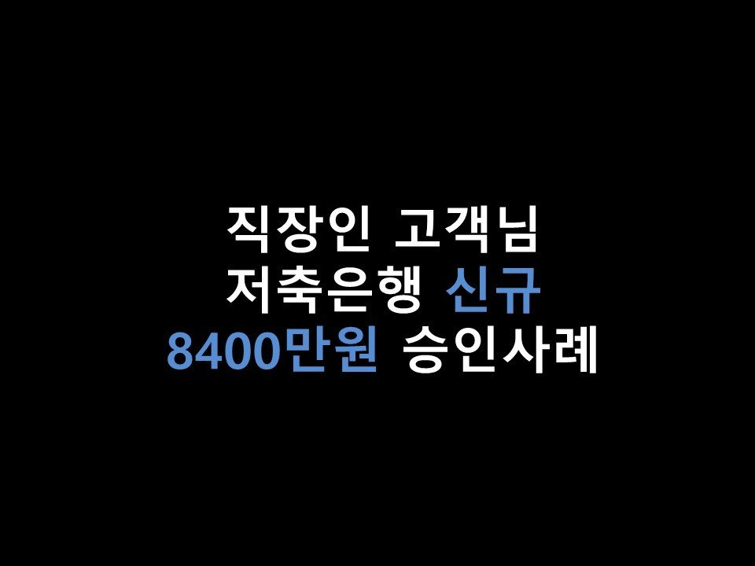
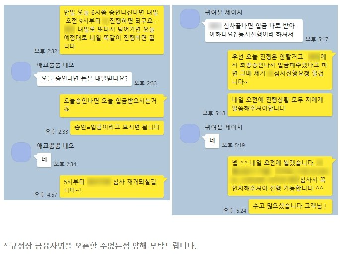

★직장인 고객님 저축은행 신규 8400만원 승인사례★

안녕하세요 ~! 오늘은 직장인 고객님의 대출 승인사례를 소개해드리겠습니다~!
고객님께서는 현재 직장4대보험 가입, 재직기간 1년 6개월, 월 급여는 매달 300만원 수령하고 계셨습니다.
이용중이신 대출로는 은행권 2400만원이 있으셨고, 신용점수는 NICE기준 860점이었습니다.
고객님께서는 급하게 큰 자금이 필요하셔서 저희 뱅크앤론으로 대출문의를 주셨습니다~!
직장조건, 신용점수가 좋으신편이셨고, 이용중이신 대출도 은행권대출이라 2금융권으로
충분히 큰 한도 나올 수있을듯하여, 가장 승인률 좋은 금융사부터 순차적으로 한도 조회를 도움드렸습니다 ^^
그 결과 여러곳에서 한도가 나왔지만, 가장 조건이 좋은 금융사 2곳을 동시진행 해드린 결과
P 저축에서 5200만원, E 저축은행에서 2000만원을 상담신청 다음날 온전히 승인받으셨습니다 ^^
워낙 큰 금액이다보니 금융사에서도 정밀심사를 들어가게 되어.. 최대한 신경써서 진행해드린 케이스입니다 ^^
고객님께서는 추가적으로 더 가능한 곳이 있다면 알아봐달라고 말씀해주셨지만, 이미 신용대출이 큰 금액으로
두건이나 이루어진 터라, 일반적인 신용대출 상품으로는 더는 어려우신 상황이었습니다. 그리하여
승인률이 좋은 정부지원 상품을 안내드린 결과 1200만원을 추가로 받아가실 수있게 되었습니다~! ^^
아래는 저와 고객님의 대화내용입니다~ 참고부탁드립니다 ^^
감사합니다.
